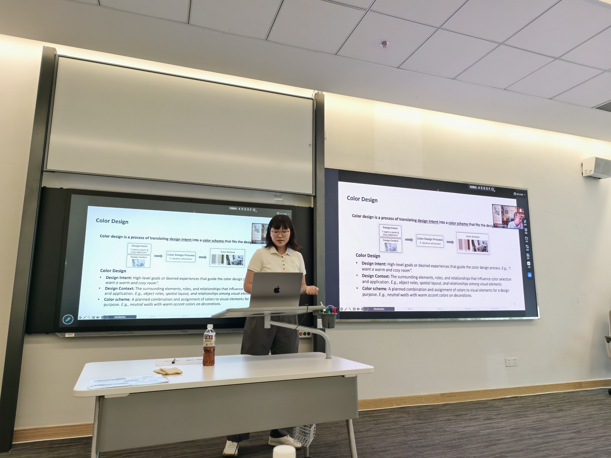
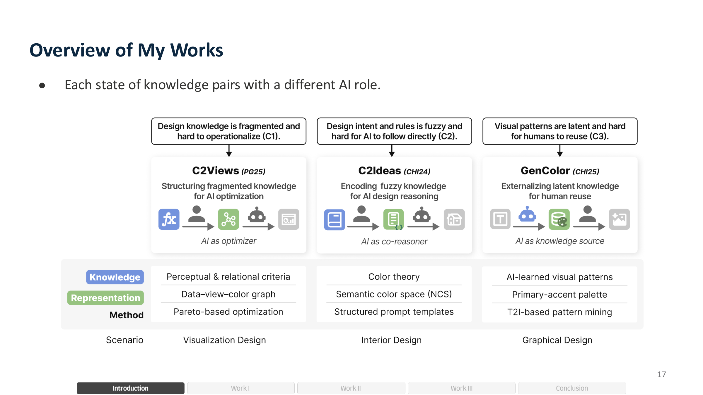
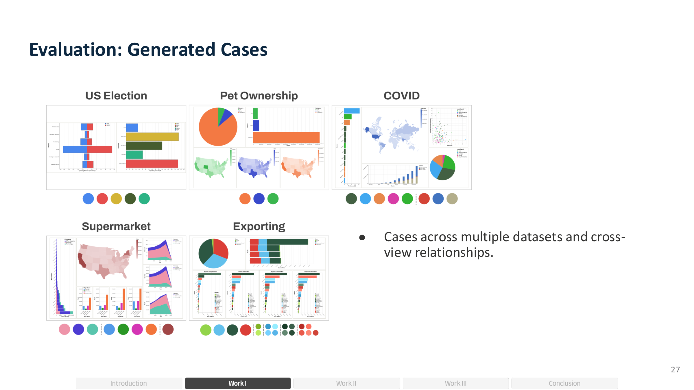
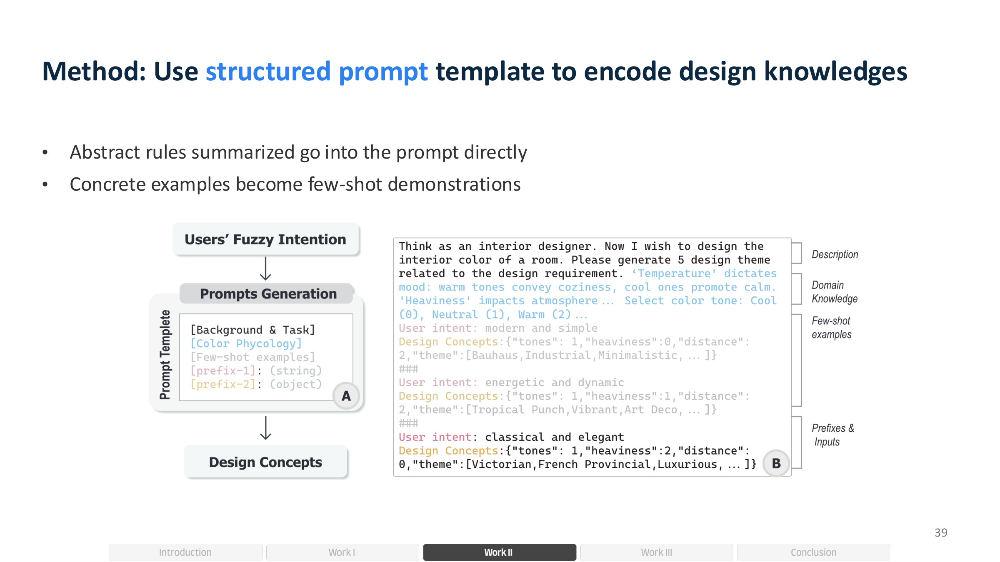
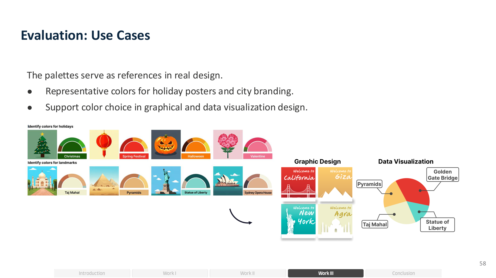
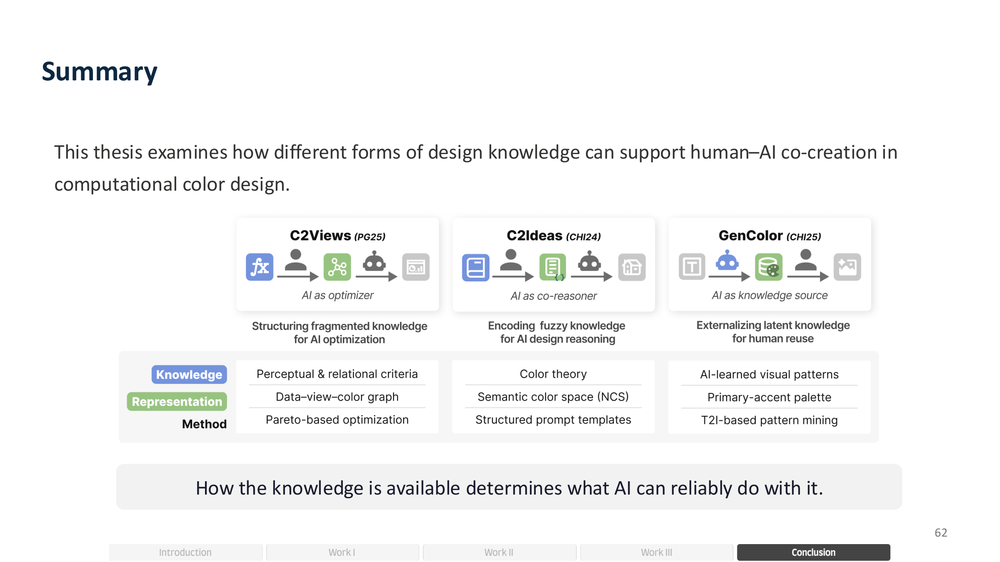
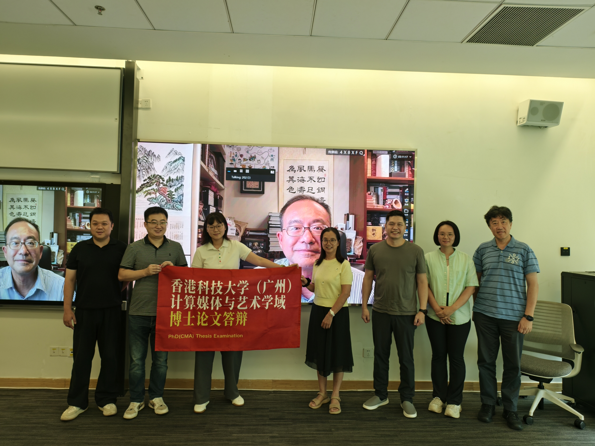

2026年8月10日，香港科技大学（广州）信息枢纽计算媒体与艺术学域博士研究生侯伊涵同学顺利完成博士学位论文答辩。侯伊涵同学的博士论文题目为《Knowledge-Grounded Human–AI Interaction for Computational Color Design》，由曾伟教授和屈华民教授联合指导。答辩委员会对侯伊涵同学的研究工作给予了高度评价，一致同意通过其博士学位论文答辩。
色彩设计贯穿于数据可视化、室内设计、平面设计和用户界面等众多领域，是视觉传达的核心环节。然而，色彩设计远非"选几个好看的颜色"那么简单——设计意图往往是模糊的，客户说"我想要温暖舒适的感觉"，而非精确的色值；色彩方案高度依赖设计上下文，同一个概念在不同场景中需要截然不同的色彩表达；同时，设计师还需要在可读性、协调性、情感表达等多重标准之间反复权衡。随着生成式AI的快速发展，一个核心问题浮现出来：如何让AI真正理解并运用设计知识，与设计师协同完成色彩创作？

针对这一挑战，侯伊涵同学提出了"知识驱动的人机交互"研究框架。框架的核心思想是：设计知识以不同形态存在——有些是可量化的显性准则，有些是模糊的设计原则，有些是隐含在生成模型中的视觉模式——知识的形态决定了AI能够可靠承担的决策范围。围绕这一思想，论文开展了三项研究，分别对应三种不同的人机协作模式。

第一项工作C2Views聚焦多视图可视化中的色彩一致性问题。在数据仪表盘中，颜色既要保证单个视图内的可读性，又要跨视图传递数据关联——比如同一绿色在不同图表中应指向同一数据。然而，已有的色彩设计准则分散在不同文献中，彼此冲突，难以同时满足。C2Views通过构建"数据-视图-颜色"图谱，将碎片化的准则整合为统一的可计算表示，并采用帕累托优化在单视图有效性与多视图一致性之间寻找最佳平衡，输出一组候选方案供设计师选择。16人被试内实验表明，该方法在四项有效性指标上均优于基线。成果发表于Pacific Graphics 2025。

第二项工作C2Ideas面向室内色彩设计中更模糊的知识形态。室内设计师面对的是"现代风格""温馨氛围"这类开放性意图，以及色彩心理学、比例法则等难以量化的定性原则。C2Ideas提出了基于大语言模型的分阶段推理流程：先将设计意图解构为风格、情绪、场景等维度，再逐步生成色板并渲染到具体场景中。创新性地引入NCS色彩空间的语义表示——不同于毫无语义的十六进制色值，NCS描述了颜色的黑度、彩度和色调，使AI能够"读懂"设计规则并加以遵循。14位设计师参与的3360次评分实验表明，该方法在合理性与启发性之间取得了独特平衡。成果发表于ACM CHI 2024。

第三项工作GenColor解决的是隐含知识的外化问题。设计师经常需要寻找特定概念的代表色——"自由女神像是什么颜色？""春节应该用什么配色？"——这些色彩-概念关联藏在大量视觉经验中，难以系统总结。GenColor从文本到图像生成模型中挖掘这些关联，通过可控生成产生多样化样本，再经语义分割提取目标区域的色彩，最终输出设计师可直接使用的"主色-辅色"调色板。24位专业设计师对36个概念的864组标注验证表明，生成方法在色彩接近度上显著优于传统图像检索方法。成果发表于ACM CHI 2025。

论文的核心洞见令人深思：设计知识的表示形式决定了AI能够可靠承担的决策范围。更可计算、更明确的知识让AI承担更多决策，而模糊或隐含的知识则需要设计师的判断与解读。因此，知识表示的设计本身就可以重塑人与AI的协作边界——这为GenAI在设计领域的应用提供了新的理论视角。

祝贺侯伊涵同学顺利通过博士论文答辩！🎉 感谢答辩委员会各位专家的悉心指导与宝贵建议。侯伊涵同学的研究工作在人机交互领域顶级会议ACM CHI和计算机图形学会议Pacific Graphics上发表了多篇高水平论文，展现了港科广CIVAL课题组在"AI+设计"交叉领域的研究实力。祝愿侯伊涵同学在未来的学术道路上继续发光发热，前程似锦！🎓